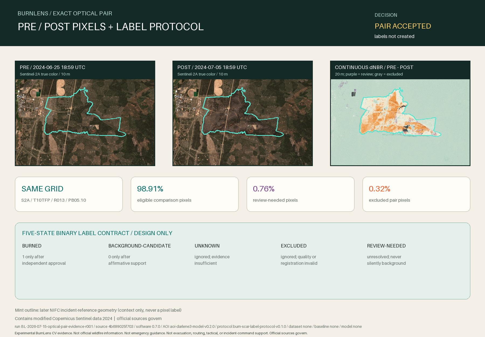

Experimental BurnLens CV evidence. Not official wildfire information. Not emergency guidance. Not evacuation, routing, tactical, or incident-command support. Official sources govern.

Decision
ACCEPT_OPTICAL_PAIR_FOR_PROTOCOL_DEFER_LABELS
Accept the exact same-orbit pair as legally usable, readable source evidence for the burn-scar label protocol. Continuous spectral change and later incident-reference context are visibly useful, but neither is truth. Label construction, content-registration measurement, independent annotation QA, a dataset, and a baseline remain separate gates.
Pair-quality states
| State | Pixels | AOI share |
|---|---|---|
| eligible-comparison | 267,067 | 98.9137% |
| review-needed | 2,063 | 0.7641% |
| excluded | 870 | 0.3222% |
Five-state label protocol
This is a versioned design gate, not an implemented annotation schema or label set. Unknown, excluded, and review-needed pixels remain outside binary loss and metrics.
| State | Future target value | Rule |
|---|---|---|
| burned | 1 | Requires accepted pre/post optical change, visible boundary review, valid quality, temporal plausibility, and independent approval; no single SCL, index, VIIRS, or perimeter signal is sufficient. |
| background-candidate | 0 | Requires clear observable land and affirmative unchanged/unburned support; outside a perimeter, absent hotspot evidence, or low change alone is insufficient. |
| unknown | ignored | Use when valid observations remain insufficient, temporally ambiguous, mixed, or conflicting; exclude from loss and metrics. |
| excluded | ignored | Use for no data, saturation/defect, shadow, cloud/cirrus, snow/ice, water, failed registration, or disallowed processing states; never convert to background. |
| review-needed | ignored | Use for SCL 7 unclassified, borderline change, boundary/mixed pixels, smoke or atmosphere concerns, local registration doubt, source disagreement, and protocol exceptions until resolved. |
Registration, leakage, and review
- Require exact EPSG:32610 20 m grid equality before comparison; this pair uses no reprojection or resampling for B04/B8A/B12/SCL evidence.
- Before label construction, measure local content registration and require residual <= 0.5 native 20 m pixel (10 m); otherwise remediate or exclude.
- Any future split must group by incident/event, scene pair, geography, and time before patches are generated.
- This single event cannot independently populate train, validation, and test groups.
- A later label checkpoint requires a second review pass independent of the initial proposal, explicit disagreement state, boundary review, and an audit sample of burned, background, unknown, excluded, and review-needed regions.
Traceability
Run: BL-2026-07-15-optical-pair-evidence-r001
Git source: 4b699025f703450f892bc2533c86560f47711aa2
Software / report: 0.7.0 / optical-pair-protocol-evidence-v0.1.0
AOI / target / protocol: aoi-darlene3-model-v0.2.0 / target-burn-scar-v0.2.0 / burn-scar-label-protocol-v0.1.0
Package / contract: darlene3-s2-optical-pair-v0.1.0 / optical-pair-intake-contract-v0.1.0
Sources: SOURCE-2026-009, SOURCE-2026-010; terms TERMS-2026-004
Application / dataset / baseline / model: none / none / none / none
Source and use notes
- Contains modified Copernicus Sentinel data 2024.
- The mint outline is later NIFC incident-reference geometry, not truth.
- Continuous dNBR and SCL are evidence for review, not automatic labels or severity.
- Official sources govern over every BurnLens-derived artifact.